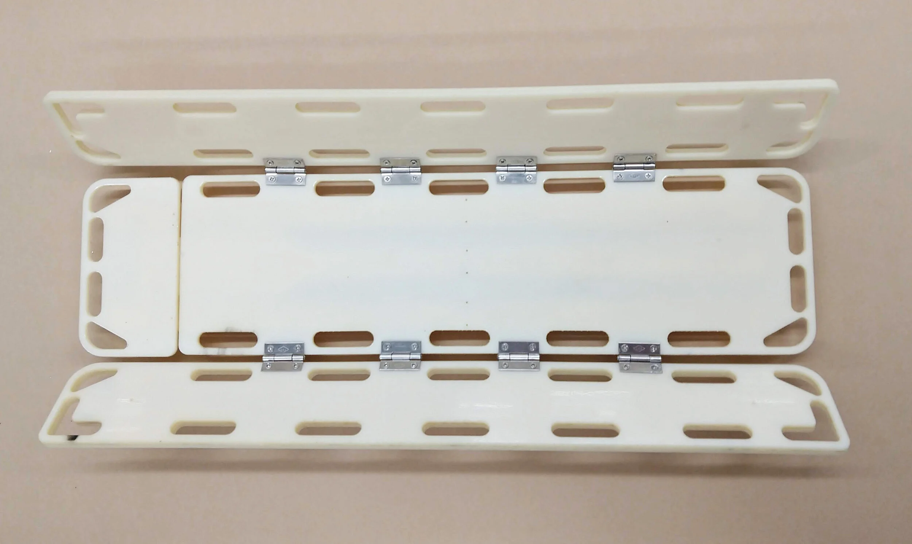
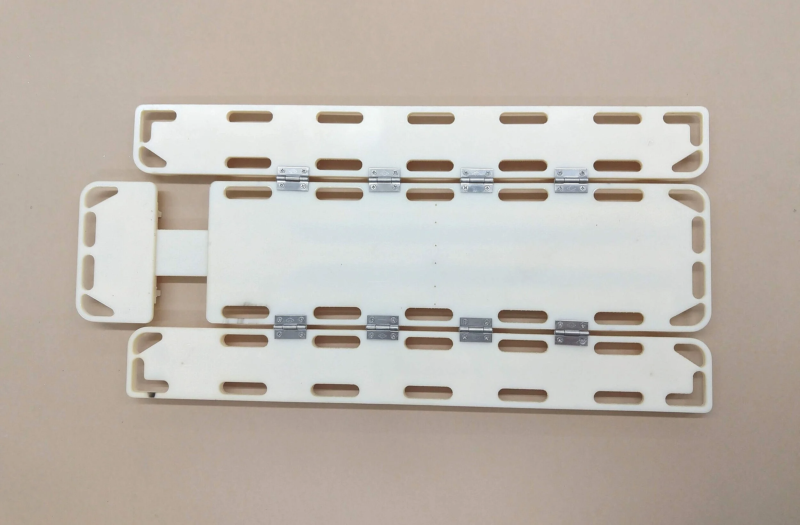
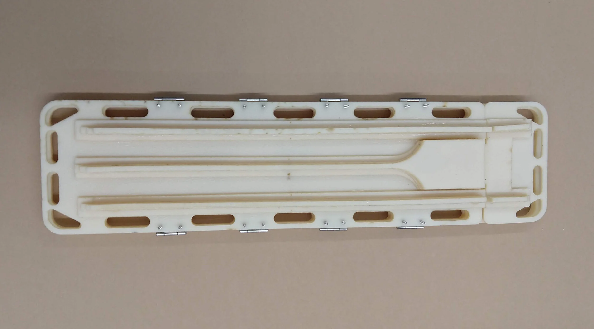
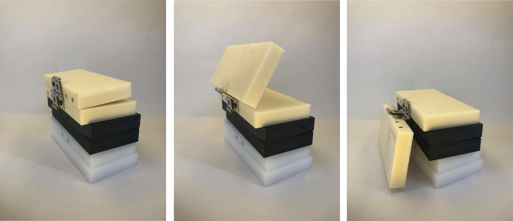

The Body Bun
An inclusive backboard designed for bariatric and tall-stature patients in emergency patient extrication.
Overview
The backboard design has remained largely the same since the 1970s when it was first introduced, and has not been updated to meet the needs of the growing, modern population. Due to a lack of redesign, EMTs are more likely to be injured on the job due to overexertion. Likewise, larger patients are at higher risk of slippage due to small surface area of the board.
The backboard features a set of flaps and an extendable headrest. The flaps provide for the ability to fit wider patients onto the board, while the extendable headrest lets the board bear taller individuals.



